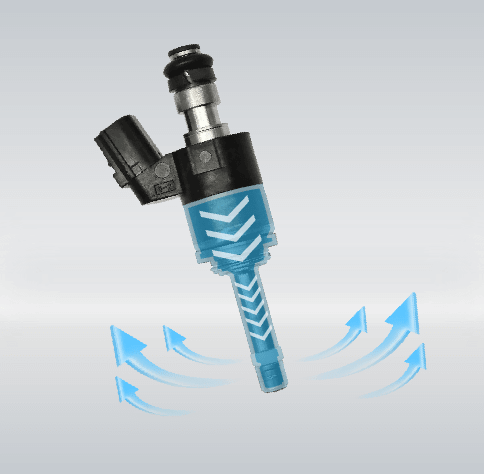
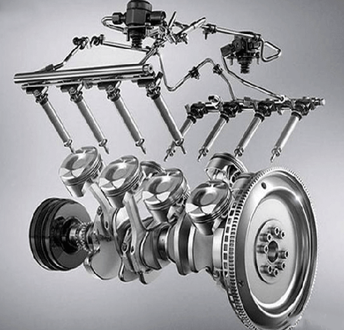
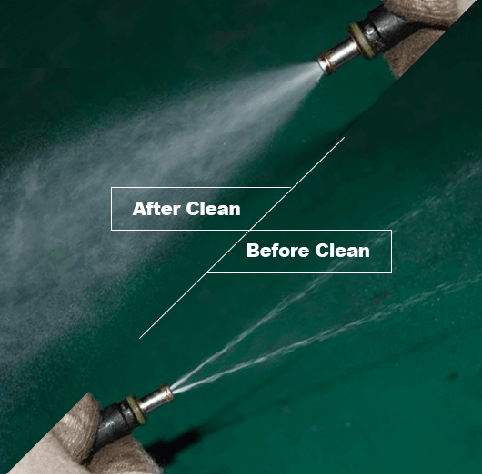

Über uns
Willkommen bei InjectorFix, Ihrem zuverlässigen Partner für die professionelle Reinigung von Einspritzdüsen. Unser Unternehmen hat es sich zur Aufgabe gemacht, die Leistung und Effizienz Ihres Fahrzeugs durch eine fachgerechte Wartung der Einspritzdüsen zu maximieren. Mit unserem hochmodernen Gerät, dem Thinkcar TK-IMT602, bieten wir eine gründliche und schonende Reinigung, die dafür sorgt, dass Ihre Einspritzdüsen wieder optimal arbeiten.
Unser Service ist einfach und bequem: Sie schicken uns Ihre ausgebauten Einspritzdüsen zu, wir reinigen sie sorgfältig und schicken sie Ihnen nach erfolgreicher Überprüfung in einwandfreiem Zustand zurück. Dabei legen wir großen Wert auf Qualität, Präzision und Kundenzufriedenheit.
Bei InjectorFix stehen Sie als Kunde im Mittelpunkt. Wir verstehen, wie wichtig ein reibungslos funktionierendes Fahrzeug für Sie ist und setzen alles daran, Ihnen einen schnellen und verlässlichen Service zu bieten. Vertrauen Sie auf unsere Expertise und lassen Sie uns dafür sorgen, dass Ihre Einspritzdüsen wieder in Bestform sind.
Dienstleistungen
Der THINKCAR TK-IMT602 ist eine hochleistungsfähige Reinigungs- und Inspektionsanlage für Kraftstoffeinspritzdüsen, entwickelt von THINKCAR. Er kombiniert die Funktionen der Reinigung und Prüfung von Einspritzdüsen in einem Gerät und ist speziell für den Einsatz in der Wartung und Reparatur von Automobilen ausgelegt.
- Ultraschallreinigung
- Kraftstoffinjektortest
- Einheitlichkeitstest
- Leckprüfung
Der THINKCAR TK-IMT602 ist ein mechatronisches Gerät, das Ultraschallreinigungstechnologie und eine Mikrocomputer-gesteuerte Ölkreislauf-Steuerung kombiniert. Diese innovative Technologie ermöglicht nicht nur eine gründliche Reinigung, sondern auch eine präzise Detektion von Problemen bei Einspritzdüsen. Das Gerät simuliert unterschiedliche Motorbetriebsbedingungen und gewährleistet damit eine optimale Prüfung und Reinigung der Einspritzdüsen für Automobile und Motorräder.
Der THINKCAR Injektorreiniger nutzt fortschrittliche Ultraschalltechnologie, um Kohlenstoffablagerungen und Verunreinigungen in den Einspritzdüsen effektiv zu entfernen. Durch den unabhängigen Ultraschallreinigungsmechanismus und die benutzerfreundliche LED-Anzeige wird eine gründliche Reinigung und einfache Datenüberwachung sichergestellt.
Der TK-IMT603 simuliert verschiedene Betriebsbedingungen des Motors und führt umfassende Tests an Injektoren durch, die in unterschiedlichen Fahrzeugen verwendet werden. Dazu gehören Gleichmäßigkeitstests, Sprühfähigkeitstests, Einspritzflusstests, Lecktests und weitere Verfahren, um den Zustand der Kraftstoffinjektoren präzise zu analysieren.
Preise
Einzelprüfung und Reinigung: 44,99 €
Satz mit 4 Einspritzdüsen: 159,99 €
Satz mit 6 Einspritzdüsen: 209,99 €
Hinweis: Aufgrund der Kleinunternehmerregelung gemäß § 19 UStG wird keine Mehrwertsteuer ausgewiesen.
Abwicklung
Füllen Sie im Bereich „Bestellung“ das Bestellformular aus, drucken dieses aus und legen es mit zu den ausgebauten und gut verpackten Einspritzdüsen. Im Anschluss verschicken Sie das Paket an:
InjectorFix
(Inh: Boban Malinic)
Josef-Lumper-Str.4
89257 Illertissen.
Sobald die Ware bei uns eintrifft, wird der Wareneingang dokumentiert, sowie der Prüf-und Reinigungsprozess Ihrer eingeschickten Einspritzdüsen. Nach erfolgreicher Instandsetzung wird Ihnen per Mail ein Bericht zugeschickt und nach erfolgreichem Zahlungseingang die Düsen an Sie zurückgeschickt. Auf der Rechnung wird aufgrund der Kleinunternehmerregelung gemäß § 19 UStG keine Mehrwertsteuer ausgewiesen.
Bestellung
Um Ihre Bestellung aufzugeben, laden Sie bitte das Bestellformular herunter, füllen es aus und senden es zusammen mit den Einspritzdüsen an uns.
Bestellformular herunterladen